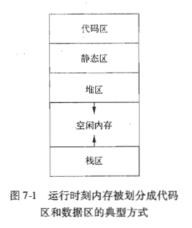
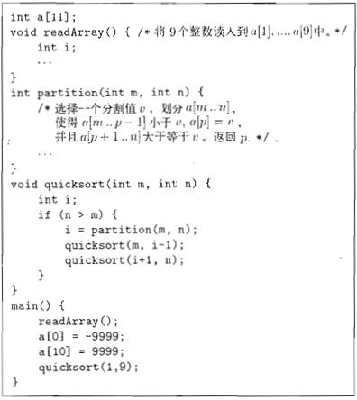
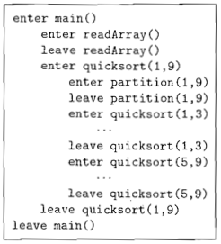
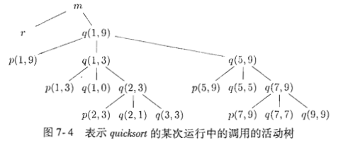
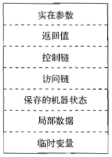
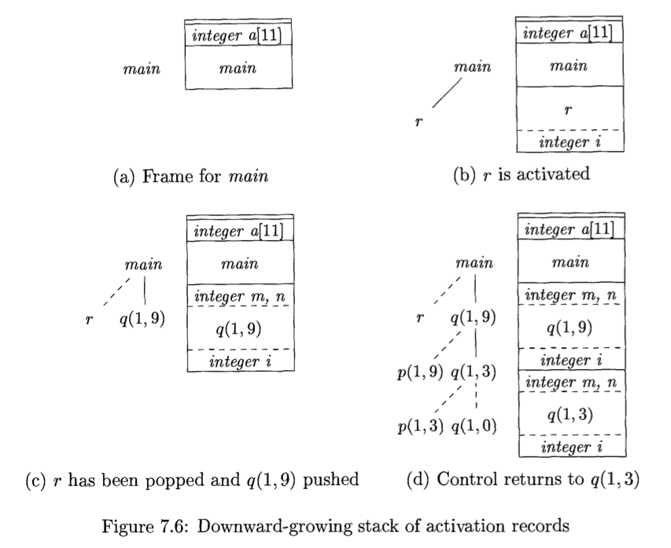

运行时的内存管理
前言
在上一篇总结 垃圾回收入门 中，我的本意是以了解垃圾回收相关概念为主，暂时忽略其他相关的概念。不过，这导致了有一些内容非常的模糊，容易引起疑惑。比如，是所有被创建的对象都需要回收吗？为什么在垃圾回收课题中会经常出现“堆区”的概念？对象在程序运行时到底是如何分配管理的？
对此，我又向前查找，阅读了《编译原理》第七章的1～4节，在这里再做一下简要总结，同时解答上面的几个疑惑。
运行时刻环境
程序语言中包含很多抽象概念，比如：名字(names)、作用域(scopes)、绑定(bindings)、数据类型(data types)、操作符(operators)、过程(procedures)、参数(parameters)和控制流构造(flow-of-control constructs)。编译器为了实现在计算机上支持这些概念，使得程序可以成功运行，需要创建并管理一个运行时刻环境(run-time environment)。
这个环境需要处理的事务如下：
- 为源程序中命名的对象分配空间、安排存储位置(the layout and allocation of storage locations for the objects named in the source program)
- 确定程序访问变量的机制(the mechanisms used by the target program to access variables)
- 过程间的连接(the linkages between procedures)
- 确定参数传递机制(the mechanisms for passing parameters)
- 实现对操作系统、输入/输出设备及其他程序的接口(the interfaces to the operating system, input/output devices, and other programs)
这里只关注第一个问题：为对象分配空间、安排存储位置
存储组织(Storage Organization)
程序在它的逻辑地址空间中运行，这个逻辑地址空间是由编译器、操作系统和计算机共同管理和组织的。
逻辑地址空间中的程序，在运行时刻的映像包含两部分：数据区(data areas)和代码区(program areas)。
某个语言在某个操作系统上，可能按照如下方式划分内存空间：

为了使运行时刻的空间利用率最大化，设计令堆区和栈区的空间对向增长
具体的空间使用如下表格：
| 区域 | 空间 | 存储内容 |
|---|---|---|
| 代码区 | 静态 | 生成的目标代码 |
| 静态区 | 静态 | 全局常量、一些编译器产生的数据 |
| 堆区 | 动态 | 具有长生命周期的数据、编译时不能确定大小的数据 |
| 栈区 | 动态 | 函数调用过程中产生的活动记录(activation records) |
这里就可以看到，需要考虑动态回收空间的只有数据会动态变化的堆区和栈区，那么为什么垃圾回收只面向堆区呢？这就要详细了解一下栈区的特点了。
空间的栈式分配
看到“栈”，就很容易联想到数据结构中的“栈”。总之，它们都是一种适用先入后出(First In, Last Out)场景的结构。
为了理解程序对空间的栈式分配，这里需要以函数的嵌套调用为例，同时引入一个概念：活动记录(activation records)。
首先，看这段使用递归的方式实现的快速排序算法。

我们可以使用简单的函数调用活动序列来描述它：

接下来，把它完整递归过程抽象成一个树形结构，这个结构被称为活动树(Activation Tree)

那么：
- 函数的完整调用过程，和活动树的前序遍历对应
- 函数的完整返回过程，和活动树的后序遍历对应
- 某一次正在进行的函数调用，就对应活动树上的某一个结点。当前全部未结束（活跃的）的调用，就对应当前结点及其祖先节点；调用的顺序，就是从根结点到当前结点的路径；返回的路径，就是调用路径的反向。
活动树中的每一个节点，都对应着一次函数调用的活动记录，它可能包含的数据如下图所示：

图中最下方的位置是接近栈顶的位置，上方接近栈底
到这里，就可以看到，活动记录中，有一部分空间是分配给这一次函数调用的局部数据的。
整个嵌套调用流程的全部活动记录，是由一个称为控制栈(control stack)的运行时刻栈管理的。每一次函数调用的活动记录(activation record)，也可以被称为帧(frame)。
在进入某个函数时，其活动记录被压入栈顶；退出时，则相应的将其活动记录弹出栈顶，复用空间。在这个过程中，活动记录里的局部数据也随之消亡。

因此，虽然很多时候，现代程序设计语言中，将无法在编译时刻确定大小的数据放在堆区。但是，当一个对象完整的生命周期都在这个过程(procedure)的局部空间中完成，在局部中创建，在过程(procedure)退出后不需要再进行访问，那么就可以为这个对象在栈区分配空间，同时也不必再考虑其失效后单独回收空间的问题。
这也就是垃圾回收只需要面向堆区的原因。
以上。
参考
编译原理（第二版）[7.1～7.2]